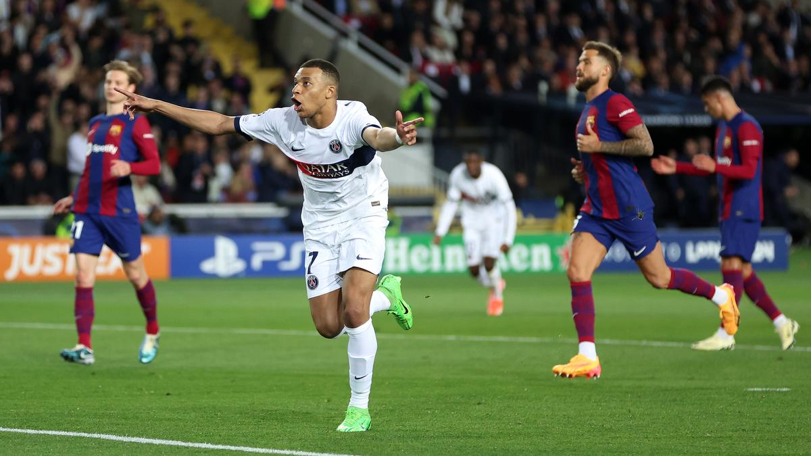

Los cuartos de final de este año fueron emocionantes, sobre todo por el partido entre el Real Madrid y el Manchester City
Otros partidos interesantes de estos cuartos de final son el Barcelona-PSG, donde el PSG triunfó 4-1 en el partido de vuelta
